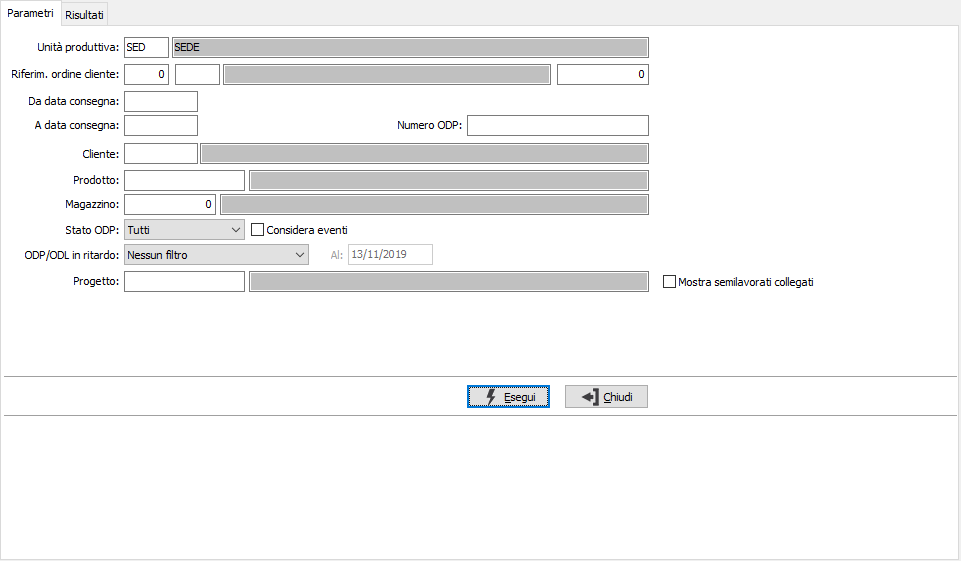
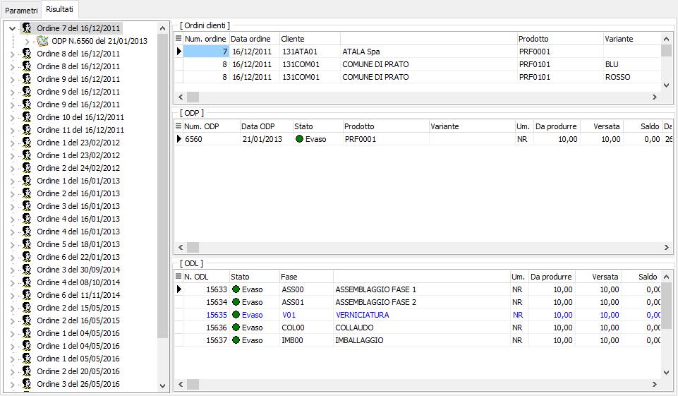
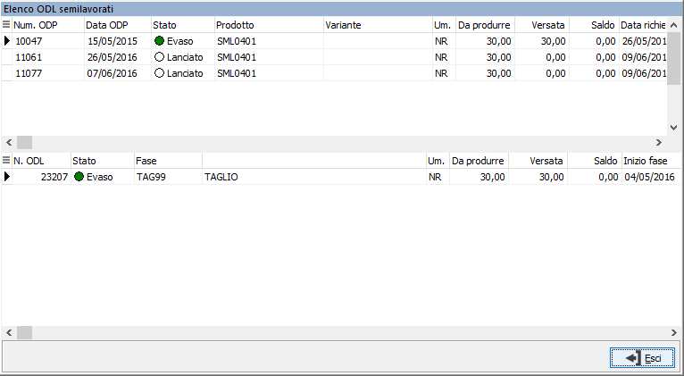
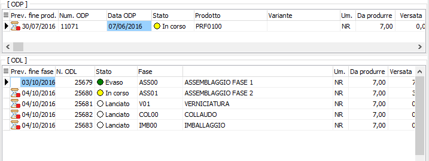

Analisi avanzamento (commerciale)
Attraverso questa analisi è possibile per gli operatori del reparto commerciale ottenere informazioni sullo stato di avanzamento degli ordini clienti aperti.
Nei parametri viene richiesta l'unità produttiva con proposta l'unità produttiva di default valida per l'utente connesso ad OS1; è possibile solo scegliere l'unità produttiva, se gestite in configurazione le unità produttive multiple; sono presenti vari criteri di selezione che consentono di selezionare un singolo ordine, un singolo ODP, un periodo di consegne, un cliente, un prodotto, un magazzino, un progetto se gestito e la possibilità di selezionare lo stato degli ODP tra Tutti, Pianificati, Lanciati, In corso, Evasi e Da evadere che comprende gli stati prima di Evaso; spuntando la casella "Considera eventi" si indica se devono essere considerati gli ODP/ODL in stato "Lanciato" come stato "In corso" se sono presenti eventi associati. è possibile specificare l'opzione "ODP/ODL in ritardo" per filtrare gli ODP/ODL in ritardo (cioè ancora aperti e la cui data di prevista fine lavorazione è ormai trascorsa); è possibile impostare il parametro come filtro (solo ODP/ODL in ritardo) oppure come avviso (evidenzia ODP/ODL in ritardo).

La pressione del pulsante Esegui avvia l'elaborazione e porta alla pagina Risultati.

In questa pagina vengono mostrati i dati elaborati in base ai criteri di selezione suddivisi in due sezioni: la sezione a sinistra in formato grafico riporta per ogni rigo di ordine gli ODP e gli ODL collegati,questa sezione è "navigabile", nel senso che spostandosi tra gli elementi la parte di destra visualizza gli stessi dati in formato esteso. Nella griglia in alto sono presenti i riferimenti ordine, ad ogni riferimento ordine corrispondono nella griglia centrale uno o più ODP su cui compaiono le quantità da produrre e versate, inoltre viene riportata anche l'indicazione dello stato accompagnata da un indicatore colorato: grigio per i pianificati, bianco per i lanciati, giallo per quelli in corso e verde per quelli evasi. Per ogni ODP vengono visualizzati nella griglia in basso i relativi ODL su cui compaiono le quantità da produrre e versate, inoltre viene riportata anche l'indicazione dello stato accompagnata da un indicatore colorato con stesso significato di quello presente sugli ODP, in più le fasi esterne vengono colorate in blu.
 |
Se attiva la gestione progetti ed è stato spuntato il parametro "Mostra semilavorati collegati", è possibile visualizzare gli ODP e gli ODL dei semilavorati collegati tramite il progetto, facendo doppio clic sulla colonna progetto sul codice progetto che interessa analizzare; compare la finestra mostrata a lato dove vengono visualizzate le informazioni. Se si effettua la stampa viene stampato, al termine della stampa, un prospetto riepilogativo che elenca ODP e ODL dei semilavorati raggruppati per progetto. |
 |
Se attiva l'opzione "ODP/ODL in ritardo" sarà presente la colonna Data prevista fine produzione, per gli ODP e fine fase per gli ODL con un indicatore visivo per capire se il rigo risulta nei tempi (clessidra con pallino verde), alla scadenza (clessidra con triangolo giallo) oppure in ritardo (clessidra con pallino rosso). |
Utilizzando i bottoni Anteprima o Stampa presenti nella toolbar è possibile effettuare la stampa dei dati elaborati.